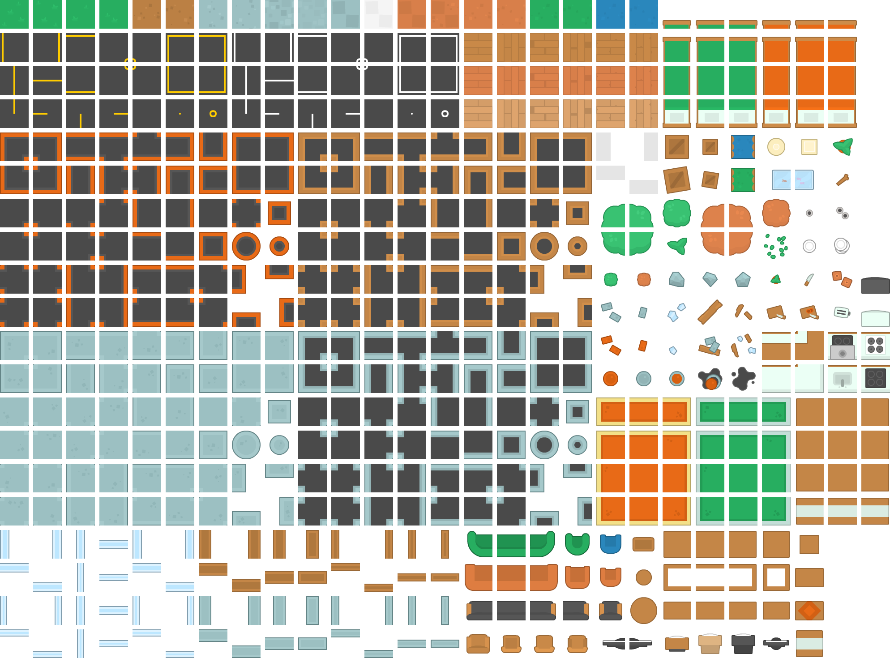
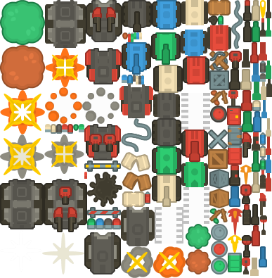

Ground-Air
Dungeon Shooter
A two-level 2D action shooter built with Unity, combining enemy combat, procedural obstacle placement, player movement, power-ups and a local leaderboard.
Playable demo is a Windows 64-bit desktop application, not an in-browser game. Extract the entire ZIP and run CPT306_Game1.exe on Windows. Source: the submitted Unity build. No browser version is presented here: only the original submitted Unity game is provided. A WebGL build of this exact Unity project would be required for browser play.
Original Unity game assets
These are authentic sprites and textures extracted unchanged from the supplied Unity project, not fabricated gameplay screenshots. In-game screenshots can be added once captured from the running original build.


How to play
Control a fighter in a closed arena. Aim with the mouse and shoot pursuing enemy vehicles while dodging collisions and obstacles. Defeat all enemies before the 60-second timer ends.
- W / A / S / D: move your fighter
- Mouse + left click: aim and fire
- Left Shift: dash to evade danger (1.5-second cooldown)
- Space: pause or resume
- Level 1: defeat 10 basic pursuing enemies. Level 2: fight 20 tougher enemies, including ranged units and melee tanks, with denser obstacles and pickups.
- Lives: 10 revives per level. Clear both levels to win; lose all revives or run out of time and the run ends.
These rules are based on the submitted game design report. The downloadable Windows build is the original Unity game.
Project highlights
Level 1 introduces basic aerial enemies; Level 2 adds harder enemy types, greater obstacle density and pickups.
Destructible and indestructible walls are generated with configurable density and overlap checks.
Movement, dash, shooting, health management, enemy spawning and projectile behaviours.
Menus, settings, score display, level transitions and local leaderboard functionality.
Technology
Unity 2022.3.55f1 (submitted full project) · C# · Visual Studio 2022 · 2D game development · Procedural generation · Gameplay scripting.
Evidence and limitations
- Two separate downloads: runnable original Windows demo and the authentic complete Unity source project (Assets, Packages, ProjectSettings).
- The accompanying nine-page design specification documents system design, controls, scripts and known issues.
- The report notes occasional enemy navigation issues around obstacles and a power-up UI indicator requiring improvement.
- To play the identical game in a browser, the original Unity project must be opened in Unity and built for WebGL; the Windows executable cannot be embedded in an ordinary website.